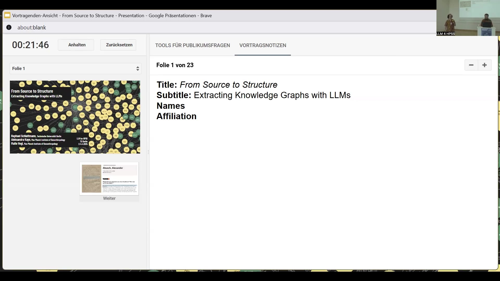
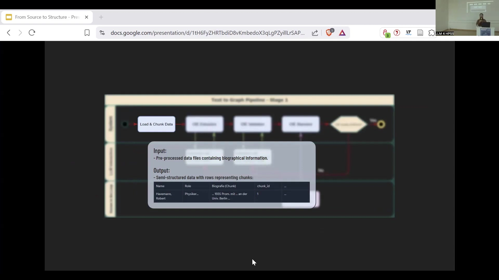
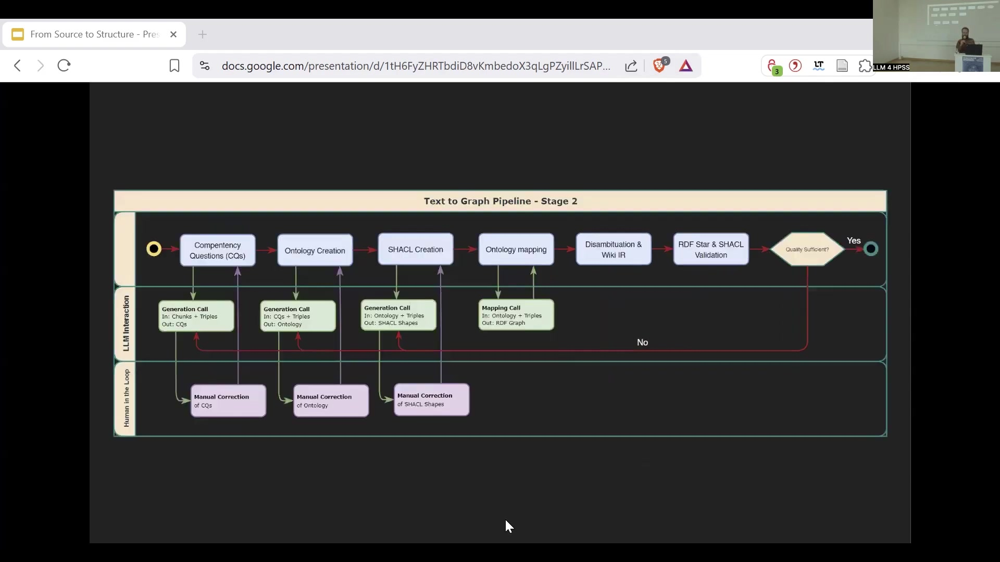
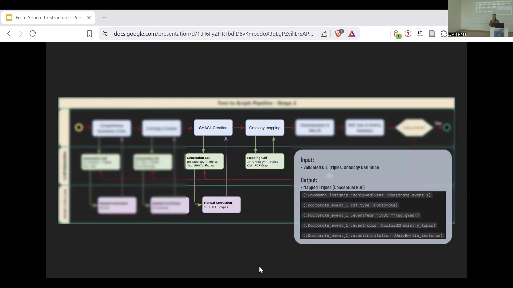

19 From Source to Structure: Extracting Knowledge Graphs with LLMs
19.1 Overview
The project focuses on extracting structured knowledge graphs from unstructured historical and biographical sources using Large Language Models (LLMs) as part of a processing pipeline. The primary objective is to enable structured querying of these previously computationally inaccessible sources, such as printed biographical dictionaries.
The problem addressed is the lack of inherent structure in many valuable historical sources, which prevents complex analytical queries. The proposed solution is a two-stage pipeline. Stage 1 involves Open Information Extraction (OIE) using an LLM to extract subject-predicate-object triples from the text. This is followed by validation and refinement using an LLM ensemble acting as an adversary.
This stage includes a human-in-the-loop evaluation against domain expert extractions to assess quality using classical performance metrics. Stage 2 focuses on structuring the extracted triples into a knowledge graph. This stage is driven by research questions, defined as competency questions, which guide the creation of a domain-specific ontology.
LLMs are used to draft both competency questions and the ontology, with human experts providing final refinement. Entity disambiguation is performed, including resolution to Wikidata instances. The structured data, along with metadata (source, scoring, chunk), is encoded into an RDF star graph. The pipeline includes a final validation step before export.
Case studies include Zielinski’s Polish biographical dictionary (1930) and the “Who was who in the GDR” reference work. Initial experiments demonstrate the ability to build networks (e.g., editors and authors) and conduct structured analyses (e.g., correlation between state awards and political affiliation/roles).
Key challenges identified are improving entity disambiguation and establishing proper benchmarking. Future work involves refining and completing the pipeline, systematic comparison with other graph extraction tools (Neo4j graph builder, Microsoft graph rack), developing graph RAG systems for natural language querying, and building multi-layered networks for deeper analysis. The approach emphasizes task decomposition, data/research question-driven structuring, and verifiability through human intervention at key points.
19.2 Introduction: Extracting Structure from Unstructured Sources

The project aims to extract knowledge graphs from source material using Large Language Models (LLMs). The primary focus is on accessing and utilizing new types of sources for research that are currently computationally inaccessible due to their unstructured nature. While historical, philosophical, and social science (HPSS) research often utilizes structured data sources such as publication databases or email archives, a significant amount of valuable information resides in unstructured formats, particularly printed books and biographical dictionaries. The core problem addressed is the inability to perform structured queries on these unstructured sources.
LLMs offer the potential to impose structure on this unstructured data. Historically, efforts like the Get Grass project attempted to address the computational accessibility of printed books. The current project specifically targets biographical sources, which are rich in detailed information about individuals but lack inherent structure. This absence of structure prevents researchers from asking complex, structured questions beyond simple facts like birth dates or work locations.
The goal is to enable queries about how professions formed networks over specific periods, how individuals migrating between locations contributed to the spread of ideas, or the specific roles of editors within a corpus in disseminating knowledge. The proposed solution involves using LLMs to construct knowledge graphs from this unstructured data in a controllable manner. A knowledge graph represents information as entities (such as persons, places, countries, or works) which become nodes in the graph. Relationships identified between these entities in the source material are represented as edges connecting the nodes. This structure allows for sophisticated structured querying.
The Neo4j graph database is used for representation and querying of the resulting knowledge graphs. The approach positions the LLM as one component within a larger processing pipeline, emphasizing its utility for specific tasks rather than seeking a universally perfect model. An example source snippet, an entry about the evangelical priest Henrik Bartsch born in 1832 who traveled and wrote books, illustrates the type of material processed. Traditional Natural Language Processing (NLP) approaches, such as NLTK, are often insufficient to extract the full contextual richness from such entries. The desired output is structured data in the form of statements or triples, capturing details like profession, birth date, birth place, and travel destinations from the text.
19.3 Two-Stage Pipeline: Stage 1 - Open Information Extraction

The process of transforming unstructured text into a structured knowledge graph is implemented as a two-stage pipeline. The first stage is responsible for extracting statements from the input text, while the second stage constructs the knowledge graph from these extracted statements, adhering to defined rules to ensure consistency and clear categorization.
The pipeline is built upon several core principles:
It employs task decomposition, breaking down the complex process into smaller, controllable, and verifiable steps.
It is data and research question driven, meaning the final structure of the knowledge graph is explicitly guided by the specific research aims of the project, rather than being solely dictated by a predefined ontology.
Verifiability is integrated through human-in-the-loop steps at critical points in the process.
The input data for the pipeline often originates from messy, unstructured sources that typically require Optical Character Recognition (OCR) or scraping. Following these initial steps, the data undergoes preprocessing to achieve a semi-structured format before entering the pipeline.
The first central step of Stage 1 is Open Information Extraction (OIE). This step utilizes a Large Language Model (LLM) to extract all subject-predicate-object triples it can identify within the text, without relying on any preset categories or schemas. OIE is a rapidly evolving research area, with a significant shift towards using LLMs for this task.
The second step in Stage 1 involves LLM ensembling. A second LLM model is employed to validate and refine the initial statements extracted by the first model. This second model is specifically prompted to act as an adversary to the first, critically evaluating its output, correcting errors, identifying any missed triples, and assigning a confidence score to the extraction. This ensembling approach significantly enhances the quality of the extracted statements.
The final part of Stage 1 is evaluation. A sample of the validated output is evaluated against a corresponding sample created independently by domain experts. Classical performance metrics are calculated to quantify the quality of the extraction. This evaluation step represents the first instance of human-in-the-loop intervention, where domain experts judge the quality. A decision point is established: if the quality score meets a predefined threshold, the process moves to Stage 2; otherwise, Stage 1 is refined. The determination of what constitutes a “good enough” score is dependent on the specific use case and the characteristics of the dataset being processed.
19.4 Two-Stage Pipeline: Stage 2 - Knowledge Graph Structuring

Following the extraction of statements in Stage 1, Stage 2 of the pipeline focuses on imposing further structure on this knowledge to form a knowledge graph.
The first step in Stage 2 involves defining competency questions. These are specific questions that the final knowledge graph is designed to answer. The purpose of starting with competency questions is to ensure that the structure of the knowledge graph is tailored to the specific research questions driving the project, making it research-driven rather than solely dependent on a predefined, potentially overly broad, ontology. A reasoning model is utilized to draft an initial set of 20 to 30 competency questions. This draft is then refined and finalized by a human domain expert, incorporating a crucial human-in-the-loop step.
Building upon the competency questions and the extracted triples, the next step is to construct the ontology for the knowledge graph. A reasoning model drafts this ontology, which is subsequently finalized and corrected by a domain expert, again involving human oversight.
The final step in Stage 2 encompasses several tasks: entity disambiguation, data encoding, and metadata inclusion. Entity disambiguation involves resolving variations in names or references to the same entity, such as mapping “Humboldt Uni Berlin” to its standardized form “Humboldt Universität zu Berlin”. Entities are also resolved to external, standardized instances, such as those found in Wikidata. The data is then encoded, and relevant metadata is included. This metadata comprises the original source data, the scoring data generated during Stage 1’s evaluation, and the initial text chunk from which the triples were extracted. The output format for the structured data is an RDF star graph.
A final validation step is performed on the constructed knowledge graph. The resulting graph can then be exported in various formats depending on the intended use. Options include exporting it for network analysis into graph databases like Neo4j or storing it as a triple store to facilitate subsequent reasoning tasks. The pipeline is designed to handle the time dimension inherent in many biographical sources; if a time stamp is available for a statement in the source text, it is extracted along with the triple and modeled within the RDF star graph, which is crucial for analyzing developments and changes over time.
19.5 Use Cases and Applications

The primary motivation for this pipeline is to provide a controlled method for converting unstructured data into structured data, thereby enabling researchers to ask overarching questions that were previously impossible.
One key use case involves Zielinski’s Polish biographical dictionary, a source compiled in 1930 as part of nation-building efforts during the formation of the Polish nation. This dictionary lists Poles who traveled abroad for exploration and other purposes. Although a PDF version is available, the printed format prevents structured querying. The pipeline enables researchers to ask specific questions about this corpus, such as how the migration of individuals facilitated the introduction of new ideas and fostered innovation in different locations, or the specific role played by editors listed in the dictionary in the spread of knowledge. An example result is a network graph, compiled by Alex Kay, visualizing the relationships between editors (represented as green nodes) and authors (represented as pink nodes). This type of network analysis, including the calculation of centrality measures and analysis across time, is not feasible manually from the printed PDF and provides novel information about the corpus.
Another use case is the biographical reference work “Who was who in the GDR”. This source documents approximately 4,000 prominent figures from East German history, including politicians, dissidents, scientists, and artists. First published in the early 1990s, it was digitized and made available online in the 2000s, allowing for text searches but not structured queries. The source is noted to have a bias towards including individuals based on their fame. An example of a structured question that can be explored after processing this source with the pipeline is identifying the differences between individuals who received state awards and those who did not, specifically concerning their political affiliations and roles within the state apparatus.
An initial experiment using an early version of the pipeline, applied to 1,000 randomly sampled biographies from this source (not the final validated set), yielded preliminary findings. It indicated strong correlations between state awards such as the Karl Marx Orden and Held der DDR with affiliation to the Socialist Unity Party of Germany (SED) and holding political power. In contrast, the Nationalpreis showed a weaker link to high positions compared to individuals who did not receive any award. This type of analysis is highly relevant for HPSS research as it allows for a structural investigation into the interconnection between science and politics. It enables researchers to examine how factors like education, political affiliation, or positions of power varied across different generations or cohorts of scientists, providing insights into the dynamics of this relationship over time.
19.6 Conclusion, Challenges, and Future Work
In summary, the project facilitates a transition from viewing biographical sources as collections of isolated entities to enabling complex structural queries across the data.
The main challenges currently faced include improving the accuracy and robustness of entity disambiguation and establishing proper benchmarking methodologies to systematically evaluate the pipeline’s performance.
Immediate future work involves refining and completing the current pipeline, which is presently considered a proof of concept. A key next step is to systematically compare its performance against other existing graph extraction pipelines, such as the Neo4j graph builder and the Microsoft graph rack.
Looking further ahead, future perspectives include utilizing the constructed knowledge graph in conjunction with the initially extracted text chunks to develop a graph Retrieval Augmented Generation (RAG) system. The objective of this graph RAG system is to allow users to query the entire dataset using natural language. Additionally, the project aims to develop methods for building multi-layered networks from the knowledge graph to support deeper structural analysis of the relationships within the data.